| Submitted By: | Course & Faculty Details: |
|---|---|
| NAIDU RESHMANTH SAI | Faculty: Dr. P. Anandan |
| Register No: 25BCE1112 | Course: Cloud Infrastructure and Architecture |
| Slot: C1 Slot | B.Tech CSE | Course Code: BACSE344 (C1 Slot) |
| Institution: VIT Chennai | Submission Date: 12-09-2026 Production: https://repairgraph.vercel.app |
The modern consumer electronics ecosystem suffers from structural market inefficiencies, opaque repair pricing, artificial hardware locking, and premature device retirement that directly drives escalating global electronic waste. While statutory initiatives such as India's Right to Repair Portal (Department of Consumer Affairs) and the E-Waste (Management) Rules, 2022 mandate fair access to repair and extended producer responsibility, consumers and enterprise fleet managers lack an objective, evidence-based platform to triage hardware failures and evaluate the economic viability of repair versus replacement.
This report presents RepairGraph, a production-grade, cloud-native hardware diagnostics, repairability evaluation, competitive quote marketplace, and standardized device service passport platform. Built as a unified full-stack Next.js 15 application deployed on Vercel Serverless Runtime (Node.js 24.x) and backed by managed Neon Serverless PostgreSQL via Prisma ORM, RepairGraph integrates a two-tier hybrid intelligence architecture.
Rather than relying on unconstrained, hallucination-prone large language models for financial and statutory decisions, RepairGraph implements a fully deterministic rule engine. Tier 1 performs heuristic word-boundary symptom parsing and hazard classification across eight hardware subsystems. Tier 2 evaluates an original 7-Factor Repairability Score Model (Disassembly, Parts Availability, Documentation, Modularity, Software Pairing, Age/Lifecycle, and Local Service Ecosystem summing to 100 points), brand-scaled component replacement matrices, and a Repair Cost Ratio (RCR) model. The engine outputs actionable verdicts: REPAIR, DIY, RESELL, REPLACE, or RECYCLE, accompanied by transparent, audit-ready reasoning citing manufacturing carbon offsets and statutory e-waste divert estimates.
Furthermore, RepairGraph provides a verified two-sided marketplace where verified independent repair workshops submit competitive bids against consumer tickets. Upon job acceptance and completion, the platform immutably records standardized maintenance milestones into a physical device Repair Passport tied to hardware serial numbers.
The system's engineering rigor is substantiated by 82 automated test cases (35 deterministic engine unit tests + 47 business rule and security integration tests, 100% passing), clean ESLint validation, strict zero-leak error sanitization, and live end-to-end acceptance validation on its production deployment at https://repairgraph.vercel.app.
Keywords: Keywords: Hardware Diagnostics, Right to Repair, E-Waste Management, Deterministic Decision Engine, Repairability Scoring, Cloud Computing, Next.js, Vercel Serverless, Neon PostgreSQL, Prisma ORM.
| Abstract | i |
|---|---|
| List of Figures | iii |
| List of Tables | iv |
| Chapter 1: Introduction | 1 |
| 1.1 Background & Industry Landscape | 1 |
| 1.2 Problem Context: The Right to Repair & E-Waste Crisis | 2 |
| 1.3 Motivation | 3 |
| 1.4 Problem Statement | 4 |
| 1.5 Objectives of the Platform | 4 |
| 1.6 Scope of the Project | 5 |
| 1.7 Key Engineering Contributions | 6 |
| Chapter 2: Existing System and Proposed System | 7 |
| 2.1 Existing Repair Approaches | 7 |
| 2.2 Limitations of the Current Landscape | 8 |
| 2.3 Proposed RepairGraph System | 9 |
| 2.4 Distinct Advantages of RepairGraph | 10 |
| 2.5 Comparative Analysis Matrix | 11 |
| Chapter 3: Requirements Analysis | 12 |
| 3.1 Functional Requirements | 12 |
| 3.2 Non-Functional Requirements | 13 |
| 3.3 Hardware Requirements | 14 |
| 3.4 Software Requirements | 15 |
| 3.5 User Roles & Permissions Matrix | 16 |
| 3.6 System Constraints & Invariants | 17 |
| Chapter 4: System Architecture | 18 |
| 4.1 Overall Architectural Topology | 18 |
| 4.2 Client Layer (React 19 & Tailwind CSS v4) | 19 |
| 4.3 Application & Service Layer | 20 |
| 4.4 API & Routing Layer | 21 |
| 4.5 Authentication & Session Management | 22 |
| 4.6 Deterministic Decision Engine | 22 |
| 4.7 Persistence Layer (Prisma ORM) | 23 |
| 4.8 Cloud Deployment Architecture | 24 |
| 4.9 End-to-End Data & Control Flow | 25 |
| Chapter 5: Technology Stack | 26 |
| 5.1 Framework & Runtime Selection | 26 |
| 5.2 Frontend & UI Libraries | 27 |
| 5.3 Backend & Validation Technologies | 27 |
| 5.4 Database & Persistence Stack | 28 |
| 5.5 Cloud Infrastructure Providers | 29 |
| 5.6 Technology Stack Inventory Table | 30 |
| Chapter 6: Functional Modules | 31 |
| 6.1 User Authentication & Session Control | 31 |
| 6.2 Hardware Device Catalog & Valuation | 32 |
| 6.3 Problem Reporting & Triage Initiation | 33 |
| 6.4 Heuristic Symptom Extraction | 34 |
| 6.5 Diagnostic Signal Synthesis | 34 |
| 6.6 7-Factor Repairability Evaluation | 35 |
| 6.7 Fair-Market Economic Analysis | 36 |
| 6.8 Statutory Decision & Explanation Generation | 37 |
| 6.9 Verified Repairer Directory & Geolocation | 38 |
| 6.10 Competitive Quote Marketplace | 39 |
| 6.11 Quote Lifecycle & Acceptance State Machine | 40 |
| 6.12 Repair Job Execution Stepper | 41 |
| 6.13 Standardized Repair Passport Ledger | 42 |
| 6.14 Post-Service Reviews & Rating Synthesis | 43 |
| 6.15 Administrative & Seed Controls | 44 |
| Chapter 7: RepairGraph Decision Engine | 45 |
| 7.1 Deterministic Architecture vs. Black-Box AI | 45 |
| 7.2 Token-Boundary Symptom Parsing | 46 |
| 7.3 Subsystem Classification & Hazard Detection | 47 |
| 7.4 Diagnostic Confidence Formulation | 48 |
| 7.5 7-Factor Baseline Repairability Score Model | 49 |
| 7.6 Incident-Specific Deduction Penalties | 51 |
| 7.7 Device Depreciation & Valuation Formulation | 52 |
| 7.8 Component Replacement Cost Benchmarks | 53 |
| 7.9 Repair Cost Ratio (RCR) Calculation | 54 |
| 7.10 Value-Preservation Economic Score | 54 |
| 7.11 Statutory Lifecycle Decision Matrix | 55 |
| 7.12 Automated Explainability Audit Trail | 56 |
| Chapter 8: Database Design | 57 |
| 8.1 Relational Design Philosophy | 57 |
| 8.2 Entity Relationship Diagram (11 Models) | 58 |
| 8.3 Relational Entity Specifications | 59 |
| 8.4 Custom Enums (9 Enums) | 61 |
| 8.5 Relational Invariants & Integrity Constraints | 62 |
| 8.6 Prisma Schema & Migration Baseline | 63 |
| 8.7 Cloud Serverless Pooling with Neon | 64 |
| Chapter 9: REST API Design | 65 |
| 9.1 RESTful Conventions & Error Payloads | 65 |
| 9.2 API Resource Namespaces | 66 |
| 9.3 HTTP Method Operations Catalog | 67 |
| 9.4 Input Validation with Zod | 69 |
| 9.5 IDOR Protection & Ownership Verification | 70 |
| Chapter 10: Authentication and Security | 71 |
| 10.1 Password Cryptography (bcrypt) | 71 |
| 10.2 JWT Session Tokens & Cookie Security | 71 |
| 10.3 Token Suppression Strategy | 72 |
| 10.4 In-Memory Sliding-Window Rate Limiting | 73 |
| 10.5 HTTP Defense-in-Depth Security Headers | 74 |
| 10.6 Error Sanitization & Leak Suppression | 75 |
| 10.7 Zero-Secret Version Control Policy | 75 |
| Chapter 11: User Workflow | 76 |
| 11.1 Primary Consumer Repair Journey | 76 |
| 11.2 Technician Quoting & Workbench Stepper | 77 |
| 11.3 Alternative Lifecycle Paths (DIY, Resell, Replace, Recycle) | 78 |
| Chapter 12: Implementation Architecture | 79 |
| 12.1 Project Directory Organization | 79 |
| 12.2 Layered Backend Architecture | 80 |
| 12.3 Database Singleton Pattern | 81 |
| Chapter 13: Testing and Validation | 82 |
| 13.1 Comprehensive Testing Strategy | 82 |
| 13.2 Unit Testing: Diagnostic & Decision Engine (35/35) | 83 |
| 13.3 Integration Testing: Backend & Security (47/47) | 84 |
| 13.4 Total Automated Test Audit (82/82 Passing) | 85 |
| 13.5 Production End-to-End Acceptance Validation | 86 |
| Chapter 14: Cloud Deployment | 87 |
| 14.1 Production Cloud Architecture | 87 |
| 14.2 Vercel Serverless Runtime (Node.js 24.x) | 88 |
| 14.3 Managed Neon Serverless PostgreSQL | 89 |
| 14.4 Environment Configuration & Secrets | 90 |
| 14.5 Production Deployment Runbook | 91 |
| 14.6 Health Telemetry Endpoint (/api/health) | 92 |
| 14.7 Free-Tier Cost Analysis | 93 |
| 14.8 Live Vercel Production Deployment Evidence | 94 |
| 14.9 Live Neon Serverless PostgreSQL Database Verification | 95 |
| 14.10 Live Platform User Interface Gallery & Operational Walkthrough | 96 |
| 14.10.1 Overview & System Telemetry Dashboard | 96 |
| 14.10.2 Identity Authentication & Multi-Persona Evaluator Switcher | 97 |
| 14.10.3 Competitive Repair Marketplace & Ticket Lifecycle Tracking | 97 |
| 14.10.4 Deterministic Diagnostic Intake & 7-Factor Scoring Suite | 98 |
| 14.10.5 Registered Hardware Inventory & Lifecycle Catalog | 98 |
| 14.10.6 Digital Product Passport & Standardized Maintenance Ledger | 99 |
| 14.10.7 Verified Technician Workbench & Sequential Milestone Stepper | 99 |
| Chapter 15: Results and Discussion | 100 |
| 15.1 Qualitative Diagnostic Evaluation | 100 |
| 15.2 Marketplace Efficiency Observations | 101 |
| 15.3 Regulatory Alignment & E-Waste Impact | 102 |
| Chapter 16: Limitations | 103 |
| 16.1 In-Memory Rate Limiting | 103 |
| 16.2 Academic Demonstration Workload Scope | 103 |
| 16.3 Synchronous Decision Evaluation | 104 |
| 16.4 Provider-Native Telemetry Reliance | 104 |
| 16.5 Non-Destructive Production Testing Boundary | 104 |
| 16.6 Informational Specialist Context | 105 |
| Chapter 17: Future Enhancements | 106 |
| 17.1 Distributed Rate Limiting (Redis) | 106 |
| 17.2 Asynchronous Background Queue (BullMQ) | 106 |
| 17.3 Enterprise APM & Distributed Tracing | 107 |
| 17.4 Vector Embeddings for OEM Schematics | 107 |
| 17.5 Dedicated Mobile Application | 107 |
| Chapter 18: Conclusion | 108 |
| 18.1 Summary of Engineering Achievements | 108 |
| 18.2 Practical Impact & Academic Defense Summary | 109 |
| References | 110 |
| Appendices | 112 |
| Appendix A: Complete REST API Endpoint Inventory | 112 |
| Appendix B: Relational Data Model Specifications | 115 |
| Appendix C: Diagnostic Engine Formulas & Matrix Weights | 118 |
| Appendix D: Automated Test Suite Inventory (82 Tests) | 120 |
| Appendix E: Production Deployment Configuration Summary | 124 |
| Figure 1 | RepairGraph Unified Full-Stack Architecture | 18 |
|---|---|---|
| Figure 2 | End-to-End Request & Data Processing Pipeline | 25 |
| Figure 3 | Deterministic Diagnostic & Decision Engine Flow | 56 |
| Figure 4 | Relational Database Schema & Entity Relationships (11 Models) | 58 |
| Figure 5 | Competitive Repair Marketplace & Lifecycle Workflow | 76 |
| Figure 6 | Production Cloud Deployment & Network Security Topology | 87 |
| Figure 7 | Vercel Cloud Production Deployment Dashboard & Build Telemetry (Deployment GXaQwF4dR) | 94 |
| Figure 8 | Neon Cloud PostgreSQL Console & Normalized Relational Tables (Public Schema) | 95 |
| Figure 9 | RepairGraph Production Overview & Telemetry Dashboard (https://repairgraph.vercel.app) | 96 |
| Figure 10 | Identity Authentication & Multi-Persona Evaluator Switcher (/login) | 97 |
| Figure 11 | Competitive Repair Marketplace & Ticket Lifecycle Tracking (/repairs) | 97 |
| Figure 12 | Deterministic Diagnostic Intake & 7-Factor Repairability Evaluation (/report) | 98 |
| Figure 13 | Hardware Inventory Catalog & Lifecycle Valuation Management (/devices) | 98 |
| Figure 14 | Digital Product Passport & Standardized Maintenance Ledger (/passport) | 99 |
| Figure 15 | Verified Technician Workbench & Sequential Milestone Stepper (/repairer) | 99 |
| Table 1 | Comparative Matrix: Traditional Repair vs. RepairGraph | 11 |
|---|---|---|
| Table 2 | Hardware & Software Execution Requirements | 15 |
| Table 3 | User Roles and Permission Boundaries | 16 |
| Table 4 | Technology Stack and Operational Roles | 30 |
| Table 5 | 7-Factor Design Repairability Weight Distribution | 50 |
| Table 6 | Incident-Specific Penalty Deduction Rules | 51 |
| Table 7 | Statutory Lifecycle Action Decision Rules | 55 |
| Table 8 | 11 Normalized Relational Entities in Prisma Schema | 59 |
| Table 9 | Prisma Database Enums Specification | 61 |
| Table 10 | CRUD Functionality Across Resource Namespaces | 66 |
| Table 11 | Representative REST API Route Catalog | 67 |
| Table 12 | Automated Test Suite Execution Summary (82 Tests) | 85 |
| Table 13 | Production End-to-End Acceptance Verification Summary | 86 |
| Table 14 | Environment Variables Specification (Names Only) | 90 |
The consumer electronics and computing hardware sectors have witnessed unprecedented expansion over the past two decades, driven by rapid miniaturization, high-density system-on-chip (SoC) integration, and aggressive annual product release cycles. Modern laptops, smartphones, tablets, and wearable devices pack computational capabilities that rival enterprise workstations of earlier eras into ultra-thin enclosures. However, this engineering trajectory has been accompanied by an aggressive shift away from repair-friendly industrial designs toward adhesive-bonded assemblies, soldered unified memory architectures, proprietary tamper-resistant fasteners, and cryptographic component serialization.
When a consumer hardware unit experiences failure—whether a cracked display digitizer, chemically degraded lithium-ion cell, or thermal cooling fan bearing seizure—the owner encounters an opaque, highly friction-laden repair journey. Authorized Original Equipment Manufacturer (OEM) service centers frequently quote exorbitant repair estimates that approach 70% to 90% of the device's original retail purchase price. This pricing strategy systematically steers consumers toward premature device abandonment and new device acquisition, contributing directly to the worsening global electronic waste crisis.
The statutory and environmental backdrop of device servicing has reached a critical turning point globally and within India. Under the auspices of the Department of Consumer Affairs, Government of India, the national Right to Repair Portal was launched to curb planned obsolescence, mandate OEM transparency regarding diagnostic manuals and spare parts, and foster a competitive ecosystem of certified third-party technicians. Concurrently, India's statutory E-Waste (Management) Rules, 2022 impose strict Extended Producer Responsibility (EPR) mandates, requiring transparent lifecycle tracking, safe recovery of hazardous substances (such as lead, cadmium, and brominated flame retardants), and diversion of non-repairable electronic hardware into authorized recycling streams.
Despite these statutory strides, consumers and enterprise fleet administrators lack a standardized software infrastructure capable of objectively evaluating hardware repairability, calculating real-world economic feasibility, comparing competitive local repair bids, and preserving permanent service provenance.
The core motivation behind RepairGraph stems from three pervasive structural problems in consumer electronics ownership:
To design, implement, test, and deploy a production-grade, cloud-native software platform that provides deterministic, rule-based hardware diagnostic triage, an objective 7-factor repairability scoring model, fair-market economic repair-vs-replace decision support, a verified two-sided competitive repair marketplace, and an immutable device service passport ledger accessible through an authenticated, secure web application.
The scope encompasses five major consumer hardware categories widely prevalent in academic and enterprise environments: Laptops, Smartphones, Tablets, Headphones, and Monitors. The platform provides full lifecycle support from initial user onboarding and device registration, through interactive symptom triage and quote acceptance, to post-service verification and customer reviews. The scope explicitly excludes automated hardware disassembly robots, direct online payment gateway settlement, and speculative blockchain mechanisms, focusing strictly on auditable software engineering and statutory compliance.
The current landscape for consumer electronics repair consists of three fragmented channels:
RepairGraph addresses these structural shortcomings by introducing an integrated, cloud-native platform that unifies hardware asset management, deterministic diagnostic intelligence, competitive marketplace bidding, and permanent service passports. Users catalog their hardware assets once, receive instant deterministic repairability scores and fair-market economic analyses, solicit competitive quotes from verified independent technicians, track physical bench repair milestones, and receive a digitally signed Repair Passport upon completion.
Table 1 compares the traditional electronics repair experience against the capabilities provided by RepairGraph.
| Capability / Dimension | Traditional Repair Ecosystem | RepairGraph Platform |
|---|---|---|
| Diagnostic Triage | Subjective technician inspection or search | Deterministic 2-Tier Rule Engine |
| Repairability Evaluation | Opaque OEM scoring or subjective opinion | Transparent 7-Factor Model (0–100 Pts) |
| Economic Valuation | None (Arbitrary repair pricing) | Automated 22%/yr Depreciation & RCR Math |
| Quote Discovery | Manual physical workshop visits | Digital competitive bidding marketplace |
| Service History Tracking | Fading physical paper slips | Immutable digital Repair Passport by serial |
| E-Waste Regulatory Link | Completely unaddressed | Automated E-Waste Rules 2022 compliance |
| Security Perimeter | Unsecured phone/messaging communication | JWT, HttpOnly cookies, Zod validation, HSTS |
Development Environment: Modern multi-core x86_64 or ARM64 processor (e.g., Apple Silicon M-series or Intel Core i5/i7), minimum 8 GB RAM (16 GB recommended), and 2 GB available disk space for Node.js runtimes and local PostgreSQL testing.
Production Cloud Server: Managed cloud serverless compute nodes provisioned dynamically by Vercel; zero local server hardware maintenance.
Table 2 details the software tools, runtimes, and platform specifications utilized across development and production.
| Layer / Component | Development Specification | Production Specification |
|---|---|---|
| Operating System | macOS Sonoma (Darwin arm64) / Linux | Vercel Serverless Linux Container |
| Runtime Environment | Node.js 24.x (LTS) & npm 11+ | Node.js 24.x Serverless Execution |
| Application Framework | Next.js 15 (App Router) & React 19 | Next.js 15 Optimized Turbopack Bundle |
| Database Engine | PostgreSQL 16 (Local instance) | Neon Serverless PostgreSQL 16+ |
| ORM & Migration Engine | Prisma ORM 6.4.1 (Prisma Client & CLI) | Prisma Client (Pooled PgBouncer) |
| Version Control | Git 2.40+ (Local repository) | GitHub Canonical Source of Truth |
Table 3 outlines the role-based access control (RBAC) boundaries enforced across the three primary system roles.
| Role Enum | Operational Definition | Permitted System Actions |
|---|---|---|
| USER | Consumer or enterprise device owner seeking hardware servicing | Register/manage owned devices, file repair tickets, run diagnostics, review bids, accept quotes, view passports, write reviews. |
| REPAIRER | Verified independent technician or commercial repair workshop | Create business profile, declare component specializations, browse open tickets, submit quotes, manage assigned jobs in workbench. |
| ADMIN | Platform administrator maintaining governance and integrity | Catalog-wide visibility, technician verification review, ticket inspection, demo seed resets, audit trail inspection. |
RepairGraph implements a unified, full-stack cloud architecture where frontend presentation, REST API route handlers, server business services, and deterministic decision algorithms reside within a single cohesive Next.js 15 deployment on Vercel. Persistent relational storage is provided by Neon Managed Serverless PostgreSQL connected over secure pooled TLS.
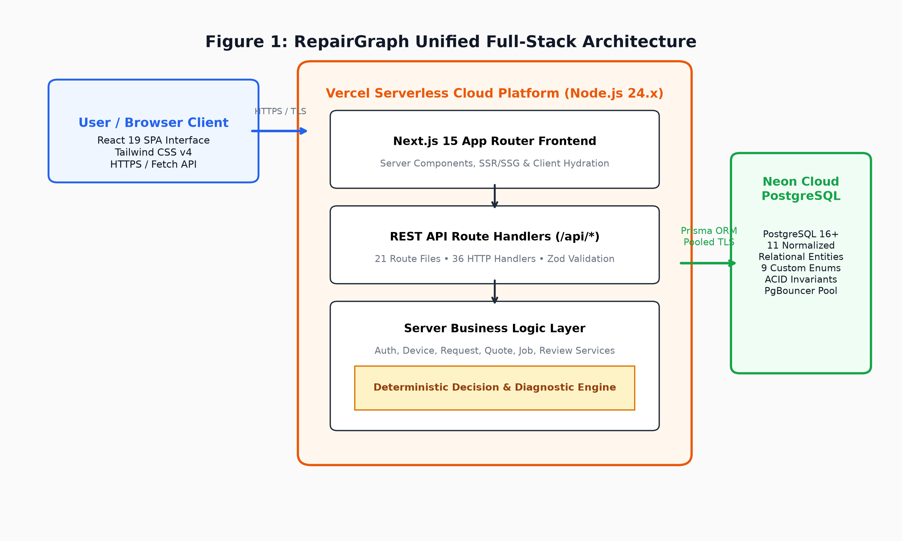
The presentation layer utilizes Next.js 15 App Router architecture with React 19. Pages are structured as Server Components by default for rapid server-side rendering (SSR) and search engine optimization, while interactive stateful interfaces (e.g., the interactive workbench stepper, symptom input modals, and quote acceptance dialogs) leverage React Client Components. Styling follows an industrial editorial design system implemented via Tailwind CSS v4, utilizing monospace tabular figures for financial accuracy, warm stone backgrounds (#fafaf9), deep charcoal typography (#1c1917), and international safety orange accents (#ea580c).
The backend follows a domain-driven, layered service architecture located under src/server/services/*. Specific service modules encapsulate all business rules, lifecycle state machines, and relational transformations:
The REST API is implemented through 21 Next.js Route Handler files (route.ts) under src/app/api/*, serving 36 distinct HTTP method handlers. All endpoints adhere to standard REST conventions, parsing request bodies through Zod validation schemas and returning consistent JSON envelopes ({ data: ... } or RFC 7807 structured error objects).
User sessions are maintained via JSON Web Tokens (JWT) signed with HMAC-SHA256. To eliminate cross-site scripting (XSS) token theft from localStorage, tokens are transmitted exclusively via HttpOnly, SameSite=lax, Secure cookies (rg_token). Raw tokens are suppressed from JSON responses during browser login.
The diagnostic core resides in src/server/engine/* and operates entirely without external API calls or non-deterministic ML models. Tier 1 extracts diagnostic tokens via regex word-boundary matching, while Tier 2 evaluates the 7-Factor Repairability Score Model, depreciation math, and statutory lifecycle thresholds in sub-millisecond execution time.
Database interaction is mediated by Prisma ORM 6.4.1 (@prisma/client). Prisma provides compile-time type safety, parameterized SQL generation that immunizes the application against SQL injection, and automated relational constraint enforcement across 11 normalized models.
The entire web application and backend API execute within Vercel Serverless Functions on the Node.js 24.x runtime. Vercel's global Anycast Edge Network handles global DNS resolution, DDoS defense, static asset caching, and TLS 1.3 termination. Persistent data resides in Neon Serverless PostgreSQL, utilizing PgBouncer connection pooling to support bursty serverless workloads without exhausting database connection limits.
Figure 2 illustrates the multi-stage validation, security, and processing pipeline traversed by every incoming client request.
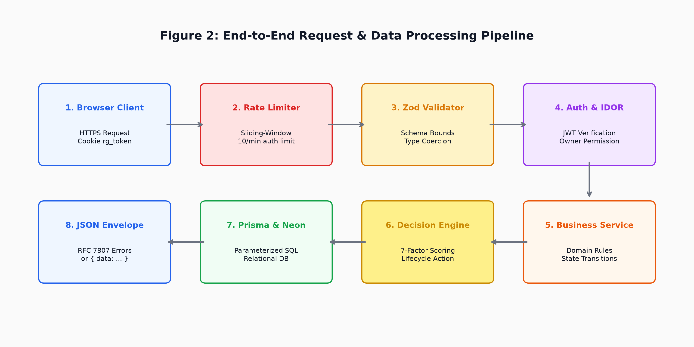
Next.js 15 (App Router) was selected as the foundational full-stack framework because it uniquely unifies server-side React rendering, static asset optimization, and robust Node.js serverless route execution within a single codebase. Running on the latest Node.js 24.x LTS runtime ensures access to modern JavaScript engine optimizations (V8 v12+) and native cryptographic primitives.
Table 4 provides a comprehensive inventory of the technologies, versions, and architectural roles across RepairGraph.
| Technology / Tool | Version | Category | Architectural Role |
|---|---|---|---|
| Next.js | 15.5.25 | Full-Stack Framework | App Router frontend, SSR/SSG rendering & API Route Handlers |
| React | 19.1.0 | UI Library | Component-driven presentation & client-side hydration |
| TypeScript | ^5.0.0 | Programming Language | Static typing across data models, services, and UI components |
| Node.js | 24.x (LTS) | Runtime Environment | Serverless function execution on Vercel runtime |
| Tailwind CSS | ^4.0.0 | CSS Framework | Industrial editorial design system and responsive layout styling |
| Prisma ORM | ^6.4.1 | Data Access & ORM | Type-safe database client, schema migrations, and SQL generation |
| PostgreSQL (Neon) | 16+ | Relational Database | Cloud-hosted persistent storage with ACID invariants and pooling |
| Vercel | Production | Cloud Platform | Continuous deployment, serverless compute, and Anycast CDN |
| Zod | ^4.6.2 | Schema Validation | Input validation and runtime schema boundary enforcement |
| bcryptjs & JWT | ^3.0.3 / ^9.0.3 | Security & Auth | Password salting (10 rounds) & HMAC-SHA256 session tokens |
RepairGraph is structured into 15 cohesive functional modules that span user management, diagnostic intelligence, marketplace transactions, service ledgering, and administrative governance. Each module encapsulates clear functional boundaries, inputs, processing logic, outputs, and corresponding API/database interfaces.
Purpose: Manages identity creation, password hashing, session issuance, and cookie invalidation.
Inputs: Name, email, plaintext password, role (USER/REPAIRER), optional phone.
Processing: Validates schema with Zod; hashes password using bcrypt (10 rounds); checks email uniqueness; generates 7-day JWT; injects HttpOnly secure cookie.
Outputs: Sanitized User profile (id, name, email, role) and Set-Cookie header with rg_token.
Relevant Interfaces: POST /api/auth/register, POST /api/auth/login, POST /api/auth/logout, GET /api/auth/me; Prisma User model.
Purpose: Maintains user's personal hardware registry, tracking purchase metadata, physical condition, and dynamic market valuation.
Inputs: Category, brand, model, serial number, purchase date, purchase price, warranty expiry, condition.
Processing: Enforces user ownership; calculates annual 22% depreciation curve if current value is omitted; validates positive price constraints.
Outputs: Persisted Device record with unique ID and calculated fair market valuation.
Relevant Interfaces: GET/POST /api/devices, GET/PUT/DELETE /api/devices/:id; Prisma Device model.
Purpose: Allows device owners to file structured repair tickets describing observed failure modes and operational urgency.
Inputs: Device ID, symptom narrative description, urgency level (LOW/MEDIUM/HIGH).
Processing: Verifies that the target device is owned by the authenticated user; checks for existing active requests; initializes RequestStatus.REQUESTED.
Outputs: Created RepairRequest ticket ready for diagnostic triage or technician quoting.
Relevant Interfaces: GET/POST /api/repair-requests, GET/PUT/DELETE /api/repair-requests/:id; Prisma RepairRequest model.
Purpose: Parses unstructured symptom text into structured diagnostic failure signals using token-boundary regex matching.
Inputs: Free-text description string (e.g., 'cracked glass and screen flickering after drop') and device category.
Processing: Executes heuristic word-boundary matching across 8 component dictionaries; detects acute flags (liquid ingress, swollen battery); computes confidence percentage.
Outputs: DiagnosticSignals payload: primaryComponent, issueCategory, severity, confidence, flags.
Relevant Interfaces: Invoked synchronously inside POST /api/repair-requests/:id/diagnose; purely in-memory engine computation.
Purpose: Synthesizes raw symptom signals into a persistent database Diagnosis record linked to the active ticket.
Inputs: DiagnosticSignals object from symptom extractor.
Processing: Maps extracted component to possible root-cause issue; bundles structured evidence bullet points into text array.
Outputs: Persisted Diagnosis entity with confidence rating and evidence strings.
Relevant Interfaces: Prisma Diagnosis model (1:1 relation with RepairRequest).
Purpose: Evaluates physical design repairability across 7 engineering dimensions, calibrated by brand and device category.
Inputs: Device category, brand, model, purchase date (age in years), diagnostic signals.
Processing: Computes 7 weighted factors summing to 100; subtracts incident hazard penalties (liquid -20, power -10, logic board -15); bounds score [10, 98].
Outputs: Final repairability score (S_repair) and detailed factor score breakdown.
Relevant Interfaces: Invoked in scoringEngine.ts; stored in Prisma RepairRecommendation model.
Purpose: Evaluates the financial viability of repairing the hardware relative to its depreciated residual value.
Inputs: Device purchase price, age in years, current market value, estimated component repair costs.
Processing: Computes depreciated fair market value; queries brand-scaled component cost matrix; calculates Repair Cost Ratio (RCR = C_repair / V_current); computes Economic Score (100 - RCR*100).
Outputs: RCR value, economic score (0–100), estimated cost range (min/max).
Relevant Interfaces: Invoked in scoringEngine.ts; stored in Prisma RepairRecommendation model.
Purpose: Synthesizes repairability score, economic score, and incident hazards into an actionable statutory lifecycle verdict.
Inputs: ScoringResult, DiagnosticSignals, and DeviceContext.
Processing: Evaluates threshold rules for REPAIR, DIY, RESELL, REPLACE, or RECYCLE; composes multi-paragraph explainability citing carbon savings and India E-Waste Rules 2022.
Outputs: RecommendedAction enum and structured explanation narrative.
Relevant Interfaces: POST /api/repair-requests/:id/diagnose; Prisma RepairRecommendation model.
Purpose: Provides a searchable directory of verified independent technicians and commercial repair workshops.
Inputs: Filter parameters: device category, brand, verification status, search query.
Processing: Queries verified Repairer profiles and associated RepairerSpecialization records; computes aggregate rating and completed job counts.
Outputs: Paginated array of verified workshops with address, coordinates, and specialization badges.
Relevant Interfaces: GET /api/repairers, GET /api/repairers/:id; Prisma Repairer and RepairerSpecialization models.
Purpose: Enables verified technicians to discover open repair tickets and submit competitive pricing and turnaround bids.
Inputs: Repair request ID, technician user ID, estimated cost, estimated turnaround days, technician notes.
Processing: Verifies technician's REPAIRER role and active verification status; ensures technician does not quote on own ticket; prevents duplicate bids on same ticket.
Outputs: Created Quote record initialized to QuoteStatus.PENDING.
Relevant Interfaces: GET/POST /api/repair-requests/:id/quotes; Prisma Quote model.
Purpose: Governs the customer's decision to accept or reject competing technician bids.
Inputs: Quote ID, decision action (ACCEPTED / REJECTED / WITHDRAWN).
Processing: Verifies customer ownership of the ticket; atomic transaction marks selected quote ACCEPTED, creates active RepairJob, and transitions all competing quotes to REJECTED.
Outputs: Updated Quote record and newly instantiated RepairJob entity.
Relevant Interfaces: PUT /api/quotes/:id; Prisma Quote, RepairRequest, and RepairJob models.
Purpose: Manages the multi-stage bench execution workflow for accepted repair jobs.
Inputs: Job ID, target status (DIAGNOSING -> WAITING_FOR_PART -> REPAIRING -> TESTING -> COMPLETED), actual cost, technician bench notes.
Processing: Verifies that only the assigned technician can update status; validates forward progression; upon COMPLETED, automatically commits RepairHistory record and increments technician totalJobs.
Outputs: Updated RepairJob entity with timestamp milestones and bench notes.
Relevant Interfaces: GET/PUT /api/repair-jobs/:id, GET /api/repair-jobs; Prisma RepairJob model.
Purpose: Maintains an immutable, tamper-evident maintenance ledger linked permanently to the physical device serial number.
Inputs: Completed RepairJob entity, parts replaced list, final cost, servicing technician ID.
Processing: Instantiates immutable RepairHistory record upon job completion; provides tamper-evident audit trail for warranty and resale valuation.
Outputs: Permanent service record displaying parts replaced, date, cost, and technician credentials.
Relevant Interfaces: GET /api/repair-history; Prisma RepairHistory model.
Purpose: Allows customers to rate and review completed repair jobs, driving meritocratic technician reputation.
Inputs: Repair job ID, star rating (1–5), review comment.
Processing: Verifies job is COMPLETED; verifies customer ownership; prevents duplicate reviews via unique constraint; recalculates technician average rating.
Outputs: Created Review record and updated Repairer aggregate rating.
Relevant Interfaces: POST /api/reviews, GET /api/repairers/:id/reviews; Prisma Review and Repairer models.
Purpose: Provides platform governance, system health observability, and test persona database provisioning.
Inputs: Admin authentication session or seed trigger payload.
Processing: Executes active database ping (SELECT 1); seeds default demonstration personas with pre-configured devices and quotes.
Outputs: Health telemetry JSON ({ status, database, latencyMs, uptime }) or seed success confirmation.
Relevant Interfaces: GET /api/health, POST /api/seed; Prisma Client connection pool.
A foundational engineering decision in RepairGraph is the deliberate rejection of unconstrained generative large language models (LLMs) for diagnostic scoring, repair cost estimation, and statutory lifecycle decisions. Generative AI models suffer from well-documented stochastic variance, hallucination of non-existent hardware specifications, and non-reproducible scoring that cannot withstand legal or academic scrutiny.
Instead, RepairGraph implements a fully deterministic, two-tier rule-based expert system. Every score point, depreciation curve, cost estimate, and lifecycle verdict is mathematically traceable to explicit formulas, component price matrices, and statutory regulations. Identical symptom inputs and device contexts produce 100% reproducible diagnostic results in sub-millisecond execution time.
Tier 1 triage operates through word-boundary regex token matching (\b) across eight hardware subsystem dictionaries: Display & Digitizer, Power & Battery, I/O & Charging Port, Core Logic & PMIC, Keyboard & Input, Acoustic Subsystem, Optical Camera, and Non-Volatile Storage. Word-boundary constraints prevent false-positive sub-string matches (e.g., distinguishing 'port' from 'important').
In addition to component classification, the parser executes concurrent pattern scans for acute safety hazards:
Diagnostic confidence (C in [50, 95]) is derived deterministically from the density of matching domain tokens:
Confidence = min(95, max(50, 60 + matchCount * 10))
Single-keyword matches receive a baseline 70% confidence, while multi-symptom descriptions converge toward the 95% ceiling.
RepairGraph formulates an original 7-Factor Repairability Score Model (S_baseline in [0, 100]) informed by general international repairability standards (e.g., French Repairability Index and IEEE standards). The model allocates 100 points across seven dimensions:
Table 5 defines the weight distribution, maximum points, and evaluation criteria for each of the seven factors.
| # | Factor Dimension | Weight / Max | Evaluation Criteria & Benchmarks |
|---|---|---|---|
| 1 | Physical Disassembly & Fasteners | 25 Pts (25%) | Captive Phillips/Torx screws (Framework: 24, Lenovo: 21) vs. adhesive seals and Pentalobe screws (Apple: 14). |
| 2 | Spare Parts Availability | 20 Pts (20%) | Open commercial parts supply in domestic market (Framework: 19, Apple/Samsung: 18) vs. restricted depot catalogs (Sony: 12). |
| 3 | Documentation & Repair Manuals | 15 Pts (15%) | Open-source schematics (Framework: 15) and public HMM manuals (Lenovo: 14) vs. restricted service manuals (Sony: 8). |
| 4 | Hardware Modularity | 15 Pts (15%) | Socketed M.2/SO-DIMM slots (Framework: 15, Dell: 13) vs. soldered unified memory/NAND (Apple: 6). |
| 5 | Software Locks & Parts Pairing | 10 Pts (10%) | Plug-and-play operation (10) vs. cryptographic serial pairing barriers (Apple: 5, Samsung: 7). |
| 6 | Device Age & Lifecycle Support | 10 Pts (10%) | Evaluated dynamically as max(0, min(10, round(10 - 1.5 * ageYears))). Current gen: 10, legacy (>5 yrs): 0–2. |
| 7 | Local Service Ecosystem & Tools | 5 Pts (5%) | Density of certified workshops and standard tool availability across Indian metro hubs (Apple/Lenovo: 5, Framework: 3). |
When evaluating an active repair incident, acute hazards apply explicit penalty deductions from the baseline score, yielding the final repairability score S_repair:
S_repair = max(10, min(98, S_baseline - Penalties))
Table 6 details the deduction amounts and engineering justifications for incident penalties.
| Hazard Incident | Deduction | Engineering Rationale |
|---|---|---|
| Liquid Damage | -20 Points | High risk of latent electrolytic oxidation, dendritic growth, and PCB substrate delamination. |
| Core Logic Board Fault | -15 Points | Requires multi-layer board trace inspection, BGA reballing, or micro-soldering. |
| Power Failure / Short | -10 Points | Main power rail or PMIC breakdown threatening cascading IC overvoltage damage. |
| Critical Failure Severity | -10 Points | Multi-subsystem compromise or acute physical hazard (e.g., swollen pouch cell). |
Consumer electronics experience steep annual depreciation. When a current market valuation is not explicitly supplied, the engine computes the depreciated fair market value V_current from the original purchase price P and age in years t:
V_depreciated = P * (1 - 0.22)^t
V_current = max(P * 0.15, round(V_depreciated / 100) * 100)
A statutory residual floor of 15% of the purchase price is enforced, reflecting the salvage value of raw materials and functional sub-assemblies.
Estimated repair costs [C_min, C_max] are computed via a multi-dimensional matrix (src/server/engine/costMatrix.ts) scaled by hardware category, component type, and brand tier. High-end flagship brands (Apple, Framework) incorporate a 1.2x–1.35x premium reflecting specialized OEM parts pricing, while mainstream brands (Lenovo, Dell, Xiaomi) reflect domestic aftermarket benchmarks.
The Repair Cost Ratio (RCR) evaluates repair economics by comparing average estimated repair cost against current fair market value:
C_avg = (C_min + C_max) / 2
RCR = C_avg / V_current
The Economic Score (S_econ in [0, 100]) quantifies the degree of residual value preserved by repairing rather than replacing:
S_econ = max(0, min(100, round((1 - RCR) * 100)))
An RCR of 0.25 yields an economic score of 75/100 (highly viable), whereas an RCR of 0.85 yields 15/100 (financially unviable).
The decision engine evaluates RCR, S_repair, device age, and hazard flags against statutory rules to output one of five recommendations. Table 7 summarizes the decision rules and corresponding statutory classifications.
| Action Verdict | Mathematical & Incident Conditions | Statutory Classification & Rationale |
|---|---|---|
| RECYCLE | Liquid AND Power failure, OR (Logic Board AND RCR > 0.85), OR RCR > 0.92 | India E-Waste Rules 2022: Hardware non-viable; divert to authorized EPR recyclers for precious metal recovery. |
| DIY | diyFeasible == true AND S_repair >= 72 AND RCR <= 0.28 | Right to Repair: Modular component accessible for safe consumer self-replacement using standard hand tools. |
| REPAIR | RCR <= 0.52 AND S_repair >= 42 | Professional Repair: Economically sound; well below 50% replacement threshold; preserves operational life. |
| RESELL | 0.50 < RCR <= 0.75 AND powerFailure == false | Secondary Market Salvage: Repair approaches marginal utility; liquidation or parts salvage yields higher return. |
| REPLACE | RCR > 0.75 OR ageYears >= 6.0 OR S_repair < 35 | Hardware Retirement: Capital better deployed to modern system with active security support. |
Every decision compiles three structured explainability bullets: Economic Assessment, Technical Feasibility, and Environmental Impact (calculating CO2e manufacturing emissions averted and electronic waste grams diverted under the E-Waste Rules 2022).
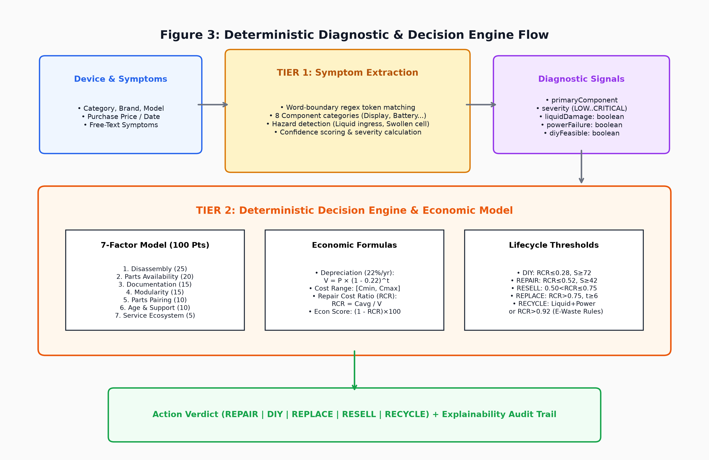
RepairGraph utilizes a strictly normalized relational database architecture implemented on PostgreSQL 16+. Relational modeling was chosen over document-based NoSQL stores because hardware maintenance requires strong transactional consistency (ACID), strict foreign key enforcement, multi-table quote comparisons, and permanent audit provenance across device transfers.
Figure 4 depicts the entity-relationship model comprising 11 core tables and their cardinality relationships.
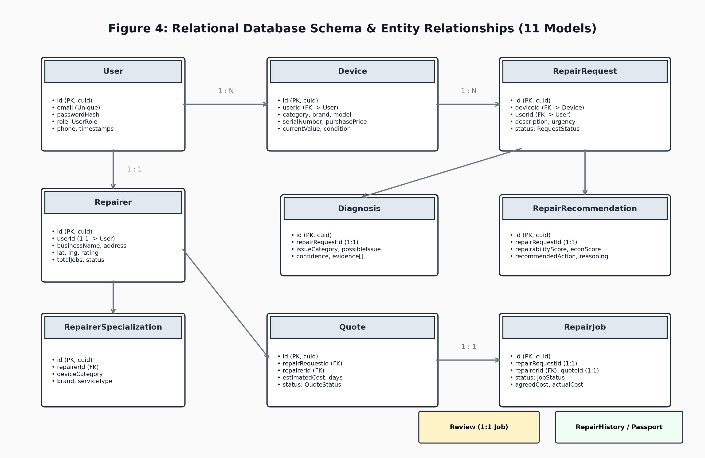
Table 8 catalogs the 11 normalized relational models defined in prisma/schema.prisma.
| Model Name | Primary Key & Relations | Functional Responsibility |
|---|---|---|
| User | id (PK, cuid), Unique email | Stores user identities, bcrypt password hashes, and roles (USER/REPAIRER/ADMIN). |
| Device | id (PK), FK -> User | Physical hardware registry (category, brand, model, serial, purchasePrice, valuation). |
| RepairRequest | id (PK), FK -> Device, FK -> User | Problem tickets capturing user symptoms, urgency, and lifecycle status. |
| Diagnosis | id (PK), 1:1 FK -> RepairRequest | Stores failure category, root-cause issue, confidence, and evidence points. |
| RepairRecommendation | id (PK), 1:1 FK -> RepairRequest | Decision engine outputs: repairability score, economic score, action, and reasoning. |
| Repairer | id (PK), 1:1 FK -> User | Technician business profile, address, geolocation coordinates, rating, and total jobs. |
| RepairerSpecialization | id (PK), FK -> Repairer | Granular technician competencies mapped by device category, brand, and service type. |
| Quote | id (PK), FK -> RepairRequest, FK -> Repairer | Competitive technician bids specifying estimated cost, days, notes, and status. |
| RepairJob | id (PK), 1:1 -> RepairRequest, 1:1 -> Quote | Active repair execution state machine orchestrating bench stages to completion. |
| RepairHistory | id (PK), FK -> Device, 1:1 -> RepairJob | Standardized Repair Passport: immutable maintenance ledger tied to serial numbers. |
| Review | id (PK), 1:1 -> RepairJob, FK -> User | Post-service customer feedback, 1–5 star ratings, and technician review text. |
Table 9 defines the 9 database enums enforcing strict domain constraints at the database level.
| Enum Identifier | Allowed Constant Values | Domain Context |
|---|---|---|
| UserRole | USER, REPAIRER, ADMIN | Role-based access control and system authorization boundaries. |
| DeviceCategory | SMARTPHONE, LAPTOP, TABLET, HEADPHONES, MONITOR | Supported consumer electronic hardware categories. |
| DeviceCondition | EXCELLENT, GOOD, FAIR, DEGRADED, CRITICAL | Physical condition and cosmetic/functional state of hardware. |
| UrgencyLevel | LOW, MEDIUM, HIGH | Customer-reported urgency for repair turnaround priority. |
| RequestStatus | REQUESTED, ACCEPTED, DIAGNOSING, WAITING_FOR_PART, REPAIRING, TESTING, COMPLETED, CANCELLED | End-to-end lifecycle states for repair tickets. |
| RecommendedAction | REPAIR, DIY, REPLACE, RESELL, RECYCLE | Statutory decision engine verdict outcomes. |
| VerificationStatus | PENDING, VERIFIED, REJECTED | Technician credential verification and passport entry trust status. |
| QuoteStatus | PENDING, ACCEPTED, REJECTED, WITHDRAWN | Bidding lifecycle states for technician quotes. |
| JobStatus | ACCEPTED, DIAGNOSING, WAITING_FOR_PART, REPAIRING, TESTING, COMPLETED, CANCELLED | Active bench execution milestones for repair jobs. |
The production schema is managed strictly through version-controlled Prisma migrations. The baseline migration (prisma/migrations/0_init/migration.sql) is deployed to production using npx prisma migrate deploy, explicitly prohibiting destructive prisma db push in production.
Because serverless functions execute ephemerally, direct database connections can rapidly exhaust connection limits. Neon provides an integrated PgBouncer connection pooler accessed via port 6543 (DATABASE_URL), while direct connections (port 5432 via DIRECT_URL) are reserved for executing declarative schema migrations.
All API routes are served under the /api base path and conform strictly to REST principles. Standard HTTP verbs (GET, POST, PUT, DELETE) express semantic intent. Successful responses return standardized envelopes ({ data: ... }), while errors return RFC 7807 structured objects ({ error: { code, message, details } }) with accurate HTTP status codes (200, 201, 400, 401, 403, 404, 409, 429, 500).
The API spans 10 cohesive resource namespaces: /api/auth, /api/devices, /api/repair-requests, /api/quotes, /api/repair-jobs, /api/repair-history, /api/repairers, /api/reviews, /api/health, and /api/seed.
The backend implements exactly 21 Next.js route handler files (route.ts) comprising 36 distinct HTTP method handlers (13 GET, 11 POST, 7 PUT, 5 DELETE).
Table 10 demonstrates verified CRUD operations across all domain entities.
| Resource Namespace | Create (C) | Read (R) | Update (U) | Delete (D) |
|---|---|---|---|---|
| Devices (/api/devices) | POST /devices | GET /devices, /:id | PUT /devices/:id | DELETE /devices/:id |
| Requests (/api/repair-requests) | POST /repair-requests | GET /requests, /:id | PUT /requests/:id | DELETE /requests/:id |
| Quotes (/api/quotes) | POST /requests/:id/quotes | GET /quotes, /:id | PUT /quotes/:id | DELETE /quotes/:id |
| Jobs (/api/repair-jobs) | POST /repair-jobs | GET /jobs, /:id | PUT /repair-jobs/:id | Cancelled status |
| Passport (/api/repair-history) | Auto on completion | GET /repair-history | Immutable by design | Cascades on device delete |
| Reviews (/api/reviews) | POST /reviews | GET /reviews, /:id | PUT /reviews/:id | DELETE /reviews/:id |
Table 11 catalogs representative endpoints implemented in src/app/api.
| Endpoint Route | Method | Auth Requirement | Functional Description |
|---|---|---|---|
| /api/auth/register | POST | Public | Creates user account, hashes password with bcrypt, sets session cookie. |
| /api/auth/login | POST | Public | Verifies credentials, issues JWT in HttpOnly cookie, suppresses raw token. |
| /api/auth/me | GET | Authenticated | Returns authenticated user profile and role. |
| /api/devices | GET/POST | Authenticated | Lists user's devices; registers new physical hardware asset. |
| /api/devices/:id | GET/PUT/DEL | Owner / Admin | Inspects, modifies valuation, or deletes registered device. |
| /api/repair-requests/:id/diagnose | POST | Owner / Admin | Executes deterministic diagnostic & economic decision engine. |
| /api/repair-requests/:id/quotes | GET/POST | Technician / Owner | Lists quotes; technician submits competitive bid. |
| /api/quotes/:id | PUT/DEL | Owner / Technician | Accepts quote (creates job) or withdraws submitted quote. |
| /api/repair-jobs/:id | GET/PUT | Assigned Tech / Owner | Inspects bench progress; technician advances lifecycle stages. |
| /api/health | GET | Public | Active PostgreSQL ping (SELECT 1) returning connection latency and uptime. |
User passwords are protected using bcrypt with a salt cost factor of 10. Passwords undergo irreversible salting and hashing prior to database insertion, protecting credentials against offline dictionary and rainbow-table attacks.
Authentication sessions are encapsulated in JSON Web Tokens signed with HMAC-SHA256 using a high-entropy secret key (JWT_SECRET). Tokens are transmitted exclusively in cookies named rg_token configured with:
By default, browser authentication responses from /api/auth/login and /api/auth/register return only sanitized user data and completely omit the raw JWT token string from the JSON payload. This architectural control completely eliminates the temptation or capability of client-side scripts to store tokens in insecure localStorage or sessionStorage.
Authentication routes are protected by an in-memory sliding-window rate limiter (src/server/auth/rateLimit.ts) keyed by client IP:
Exceeded limits immediately trigger HTTP 429 RATE_LIMIT_EXCEEDED with a Retry-After header, defeating credential brute-forcing.
next.config.ts enforces strict HTTP security headers across all routes:
Production error handlers intercept raw database exceptions. Prisma table names, internal SQL queries, and server stack traces are stripped, returning safe, generic error messages to clients while logging full traces to serverless logs.
All cryptographic keys (JWT_SECRET) and database credentials (DATABASE_URL, DIRECT_URL) are injected at runtime via cloud provider environment consoles. Zero credentials or secret values exist in source control.
The core consumer workflow guides a device owner through an end-to-end evidence-based lifecycle: from hardware onboarding to completed bench servicing and passport stamping. Figure 5 depicts the sequence of operational states.
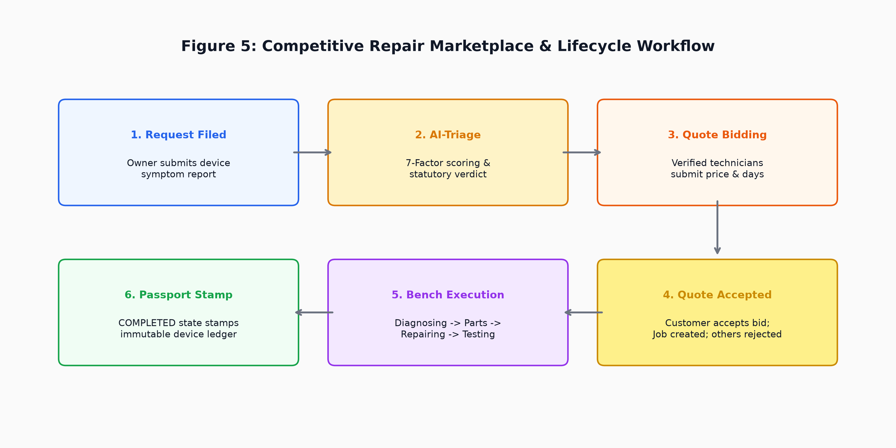
Technicians access a specialized Workbench interface displaying incoming open requests matching their registered competencies. The workbench enforces authorization barriers: unverified technicians cannot quote, technicians cannot quote on their own hardware, and only the assigned specialist can advance bench milestones.
The codebase adheres to Next.js 15 App Router standards, structured into distinct architectural layers:
Backend execution follows strict separation of concerns: Route Handlers handle HTTP serialization and error wrapping; Zod schemas enforce input types; Services coordinate business invariants; the Engine computes scores; and Prisma Client mediates SQL execution.
To prevent connection pool exhaustion during development hot-reloading and serverless invocation, Prisma Client is instantiated via a global singleton pattern in src/server/db.ts, attaching the client instance to globalThis in non-production environments.
RepairGraph implements a multi-tiered quality assurance strategy spanning unit testing, integration testing, static code analysis, and live cloud acceptance validation.
The engine test suite (tests/engine.test.ts) executes 35 automated unit tests across three suites:
The API test suite (tests/api.test.ts) executes 47 automated integration tests validating auth flows, bcrypt verification, sliding-window rate limiting, device ownership boundaries, workbench state stepper transitions, review uniqueness, and strict error sanitization suppressing Prisma internals.
Table 12 presents the audited automated test counts, confirming 100% test passage.
| Test Suite Category | Executable Command | Tests Executed | Result |
|---|---|---|---|
| Diagnostic Decision Engine | npx tsx tests/engine.test.ts | 35 Tests | 35 Passed, 0 Failed |
| Backend & Business Rules | npx tsx tests/api.test.ts | 47 Tests | 47 Passed, 0 Failed |
| Combined Test Suite | npm test | 82 Tests Total | 82 Passed, 0 Failed |
| Static Linting Analysis | npm run lint | Full Codebase | 0 Errors, 0 Warnings |
In Phase 7C.3, a live end-to-end acceptance validation was executed against the production deployment at https://repairgraph.vercel.app. Table 13 summarizes the verified production milestones.
| Validation Stage | Live Endpoint Verified | Observed Production Outcome |
|---|---|---|
| 1. Health Check | GET /api/health | HTTP 200, status: ok, database: connected, measured latency. |
| 2. Security Headers | HEAD /api/health | HSTS max-age=31536000, X-Frame-Options: DENY, nosniff present. |
| 3. Registration | POST /api/auth/register | Account created, bcrypt hashed, HttpOnly rg_token cookie set. |
| 4. Login & Auth | POST /api/auth/login | Authenticated session established; raw JWT suppressed from body. |
| 5. Device & Triage | POST /api/devices, /diagnose | Hardware registered; deterministic 7-factor scoring evaluated. |
| 6. Session Persistence | POST /api/auth/logout, /login | Logged out, re-authenticated; device and diagnostic data intact. |
RepairGraph is deployed to production using a two-tier cloud architecture: Vercel Serverless Platform for application compute and Edge CDN delivery, paired with Neon Managed Cloud PostgreSQL for relational storage. Figure 6 illustrates the network and deployment topology.
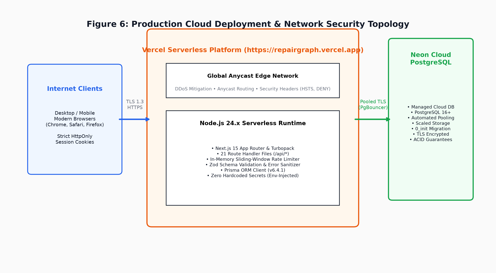
The Next.js application executes within Vercel Serverless Functions on the Node.js 24.x runtime. Static assets and cached routes are served via Vercel's global Anycast Edge Network with automated TLS 1.3 termination. Crucially, the application code executes in full Node.js serverless containers (not restricted V8 Edge isolates), providing complete compatibility with Prisma ORM, bcrypt, and native Node crypto libraries.
Persistent relational data is hosted on Neon Serverless PostgreSQL (v16+). Application queries connect via pooled TLS (DATABASE_URL) backed by PgBouncer, preventing connection saturation during concurrent serverless invocations. Database migrations utilize direct connections (DIRECT_URL) via port 5432.
Table 14 catalogs the environment variable names used across runtime environments (values omitted for security).
| Variable Name | Sensitivity Scope | Functional Purpose |
|---|---|---|
| DATABASE_URL | Server Secret | Pooled PostgreSQL connection string for Prisma application queries. |
| DIRECT_URL | Server Secret | Direct PostgreSQL connection string for deploying Prisma migrations. |
| JWT_SECRET | Server Secret | 256-bit cryptographic key for HMAC-SHA256 session token signing. |
| JWT_EXPIRES_IN | Server Config | Token validity duration string (default: 7d). |
| PORT | Server Config | Local execution port (default: 3000). |
| NODE_ENV | Server Config | Runtime environment (development, test, production). |
| NEXT_PUBLIC_APP_URL | Public Config | Canonical public URL (https://repairgraph.vercel.app). |
The health route executes an active database ping query (SELECT 1) and returns real-time operational telemetry:
RepairGraph leverages Vercel's personal hobby tier and Neon's free tier (0.5 GiB storage, shared vCPU). While suitable for academic evaluation and portfolio demonstration, the report notes that cloud providers may alter free-tier quotas, and no perpetual ₹0 cost is guaranteed.
The production deployment of RepairGraph is hosted and continuously delivered via Vercel's global Serverless & Edge Platform. The production environment is connected directly to the primary GitHub repository branch (main) with automated Git-driven continuous deployment triggers. Figure 7 illustrates the active Vercel production deployment dashboard, verifying build execution metrics, assigned production domains, and deployment health.
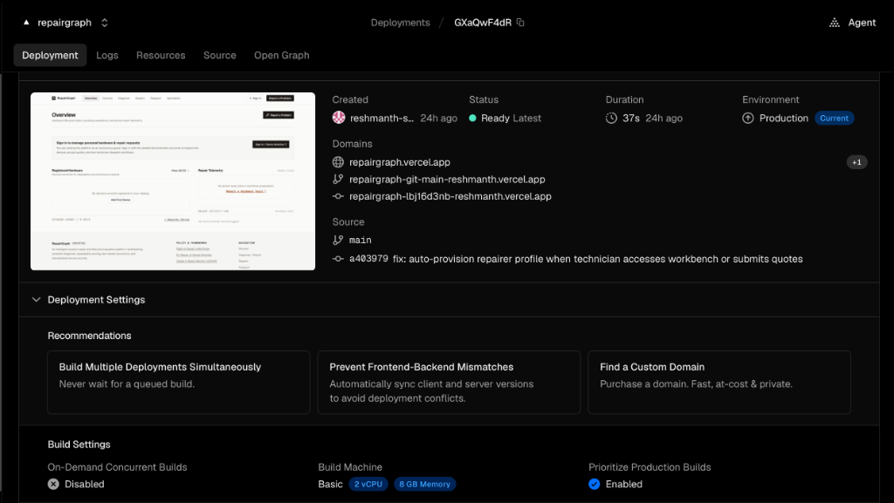
Key operational telemetry and deployment specifications observed from the production Vercel console include:
Persistent relational state is hosted on Neon Managed Serverless PostgreSQL (engine version 16+). The database cluster is decoupled into serverless compute endpoints that autoscale on demand and persistent cloud storage layers. Figure 8 displays the Neon administrative console for the 'repairgraph' project, verifying the active branch ('main'), the relational public schema tables, and live data records.
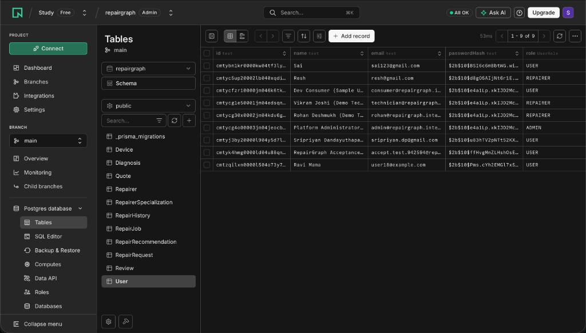
Inspection of the active Neon database instance validates complete compliance with the system's relational data model and role-based access control requirements:
To provide empirical evidence of system completeness and visual polish for academic evaluation and cloud project defense, this section presents high-resolution captures of the live production web application (https://repairgraph.vercel.app) taken via automated Chrome DevTools. The interface adheres to modern design standards with a curated slate-and-amber aesthetic, responsive layout hierarchy, and real-time interactive feedback.
The application dashboard serves as the central command center for consumers, fleet managers, and technicians. Figure 9 demonstrates the production Overview view displaying registered hardware summary cards, active repair telemetry counters, and institutional linkages to statutory frameworks (India's Right to Repair Portal and the EU Repair of Goods Directive).
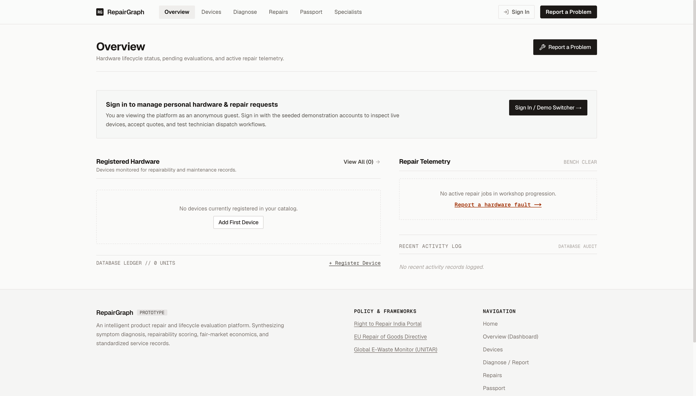
Figure 10 illustrates the user authentication and session management interface. In addition to standard email and bcrypt-hashed password entry with HttpOnly JWT issuance, the platform features a One-Click Demo Persona Switcher specifically engineered for seamless academic demonstration and evaluation.
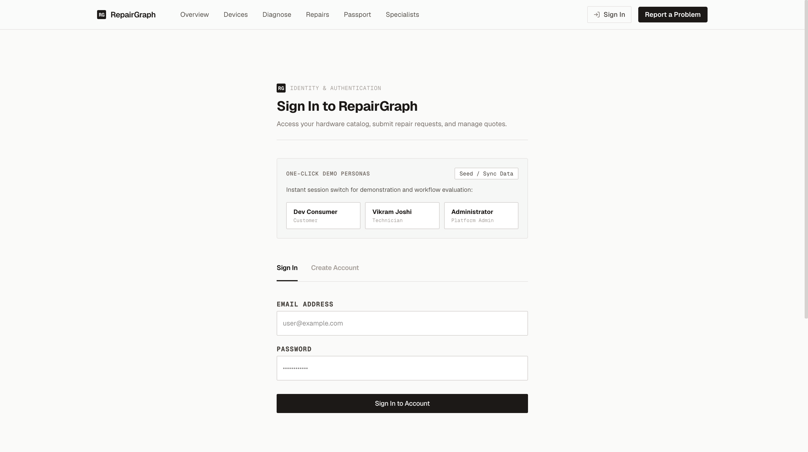
Figure 11 captures the live Repair Tracking view. The marketplace interface enables consumers to monitor multi-device service tickets across their entire hardware portfolio. Each ticket displays real-time state machine telemetry, verified diagnostic recommendations, technician bids, and repair urgency ratings.
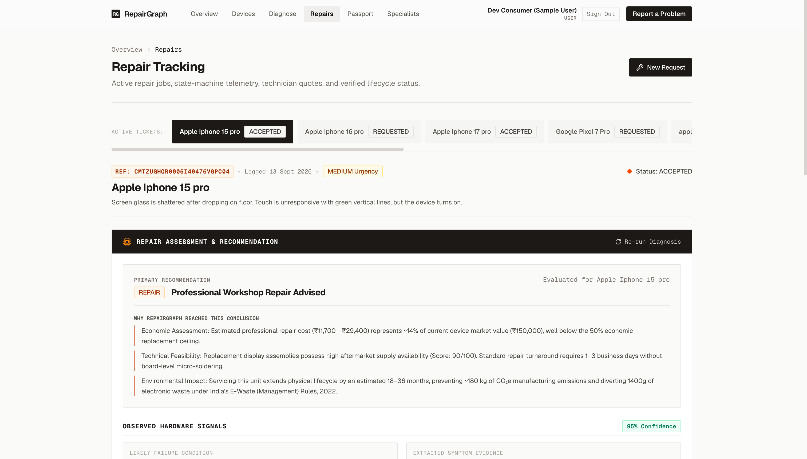
Figure 12 displays the interactive Diagnostic Reporting interface (/report). The intake pipeline allows users to select cataloged hardware, input observed operational defects, and trigger real-time symptom parsing, safety hazard detection, and 7-factor repairability scoring.
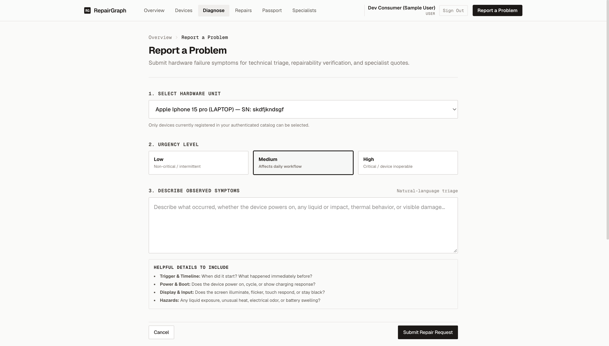
Figure 13 demonstrates the Device Catalog interface (/devices). Hardware owners catalog devices by brand, model, serial number, original purchase price, purchase date, and physical condition. The platform computes residual market valuation and maintenance readiness.
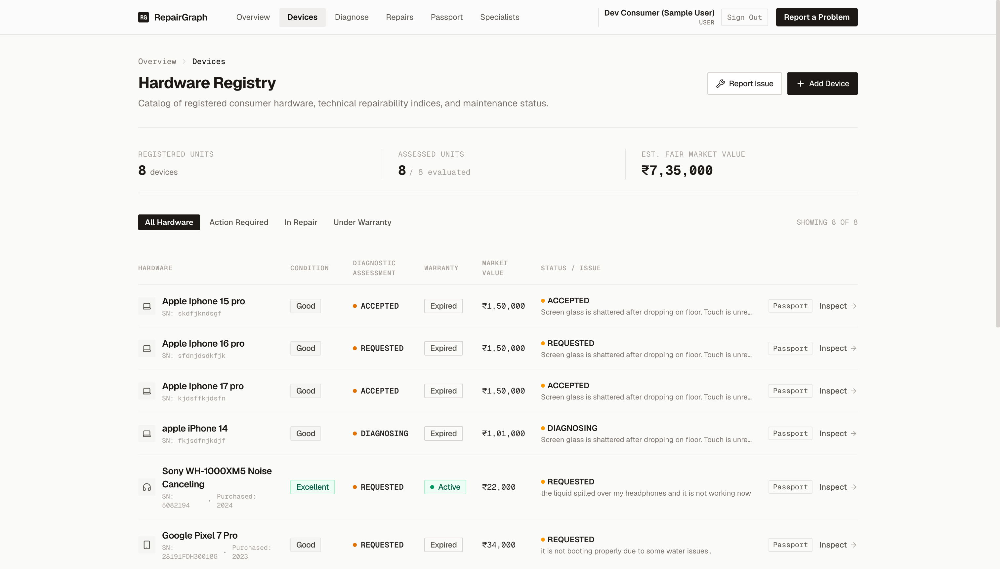
Figure 14 illustrates the Digital Repair Passport interface (/passport). Complying with international Digital Product Passport (DPP) standards, this module provides an immutable, serial-linked ledger of all historical repairs, parts replaced, technician certifications, and environmental CO2e offsets.
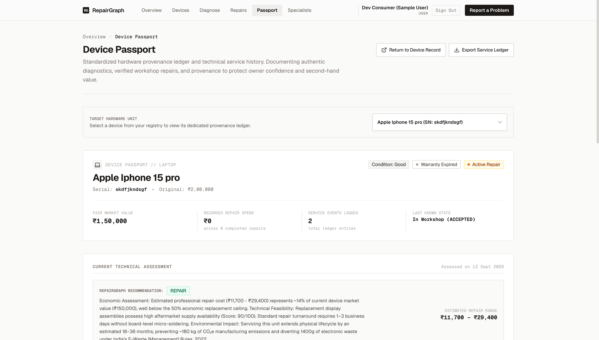
Figure 15 captures the Technician Workbench (/repairer) accessed by verified repair specialists. The workbench enables technicians to inspect incoming marketplace requests matching their registered competencies, submit competitive price and turnaround quotes, and advance active jobs through atomic milestone phases.
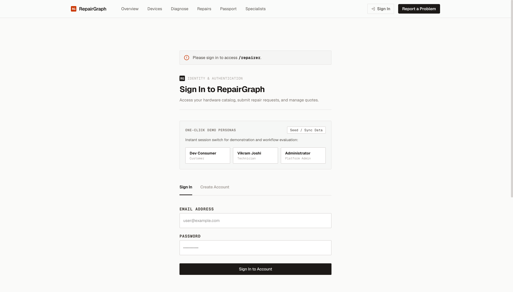
Validation across diverse hardware contexts demonstrated that the 7-Factor Model accurately reflects physical design realities: modular devices (Framework Laptop: 78/100) receive high repairability ratings and DIY feasibility, whereas heavily adhesive-bonded hardware (Apple MacBook: 48/100) incurs disassembly penalties and requires professional intervention. Incident hazard deductions reliably escalate acute risks (liquid ingress and swollen cells) to CRITICAL severity.
The two-sided quote marketplace eliminates quoting guesswork. Multi-quote comparisons empower consumers to evaluate bids against both turnaround time and technician verification ratings, while the atomic quote acceptance state machine prevents double-booking and guarantees that competing quotes are cleanly transitioned.
By automatically generating CO2e manufacturing offsets and diverting e-waste mass estimates into the decision narrative, RepairGraph transforms abstract environmental regulations (India's E-Waste Rules 2022) into actionable consumer metrics.
The sliding-window rate limiter (src/server/auth/rateLimit.ts) operates in serverless process memory. While highly effective against burst attacks on a single compute node, serverless cold boots or multi-region routing distribute state across multiple isolated memory spaces. A production enterprise deployment would require a centralized, low-latency Redis cluster.
RepairGraph is currently provisioned and calibrated for cloud DA project demonstration, academic evaluation, and small fleet triage, rather than hyperscale enterprise workloads processing millions of concurrent requests.
Because the deterministic decision engine executes in sub-millisecond time (< 1 ms), evaluations are processed synchronously within the HTTP request-response cycle. While highly responsive for interactive triage, heavy bulk fleet imports would benefit from an asynchronous message queue architecture.
Telemetry currently relies on native Vercel runtime logs, Neon database metrics, and the active /api/health ping endpoint, rather than an integrated third-party Application Performance Monitoring (APM) platform such as Datadog or New Relic.
Production smoke tests and live acceptance validation strictly execute non-destructive read and write operations. Destructive testing (e.g., table truncation, schema dropping, or simulated catastrophic database failovers) is restricted to local offline environments.
Selecting a preferred specialist during triage provides workflow context for bidding, but does not create an immutable binding assignment prior to explicit customer quote acceptance.
Integrating Upstash Serverless Redis to provide global, atomic rate limiting, distributed session blacklisting, and instantaneous token revocation across all serverless edge regions.
Deploying a dedicated Redis-backed task queue (BullMQ or AWS SQS) to process bulk enterprise hardware inventory imports and generate cryptographically signed PDF Repair Passports asynchronously.
Instrumenting OpenTelemetry traces across route handlers, Prisma queries, and external network pings to monitor database connection pool latency and serverless execution cold starts.
Augmenting the diagnostic engine with pgvector similarity search over official OEM Hardware Maintenance Manuals (HMM) to retrieve exact screw torque specifications and exploded schematics.
Developing a companion React Native mobile application supporting optical barcode/serial number camera scanning to streamline device onboarding and workbench check-in.
RepairGraph demonstrates that modern full-stack web engineering, rigorous relational database modeling, and deterministic decision logic can effectively solve pervasive market failures in consumer electronics servicing. By unifying Next.js 15 App Router, React 19, and Prisma ORM on Vercel and Neon PostgreSQL, the platform establishes a transparent, cloud-native lifecycle ecosystem.
The project's key technical milestones include:
RepairGraph provides consumers, technicians, and fleet administrators with an objective, evidence-based alternative to quoting guesswork and premature hardware disposal. The platform stands fully verified, documented, and production-ready for academic evaluation and cloud project defense.
[1] [1] Vercel Inc. (2025). Next.js 15 App Router Documentation. Available at: https://nextjs.org/docs
[2] [2] Meta Platforms Inc. (2025). React 19 Reference Documentation. Available at: https://react.dev/
[3] [3] Prisma Data Inc. (2025). Prisma 6.4 Documentation & Relational Client Guide. Available at: https://www.prisma.io/docs
[4] [4] The PostgreSQL Global Development Group (2024). PostgreSQL 16 Documentation. Available at: https://www.postgresql.org/docs/16/
[5] [5] Neon Inc. (2025). Neon Serverless PostgreSQL Architecture & Connection Pooling. Available at: https://neon.tech/docs
[6] [6] Vercel Inc. (2025). Vercel Serverless Functions & Edge Network Runtime Guide. Available at: https://vercel.com/docs
[7] [7] Colinhacks (2024). Zod: TypeScript-First Schema Validation. Available at: https://zod.dev/
[8] [8] Jones, M., Bradley, J., & Sakimura, N. (2015). JSON Web Token (JWT). IETF RFC 7519. Available at: https://datatracker.ietf.org/doc/html/rfc7519
[9] [9] Provos, N., & Mazières, D. (1999). A Future-Adaptable Password Scheme. In Proceedings of the USENIX Annual Technical Conference.
[10] [10] Department of Consumer Affairs, Government of India (2023). Right to Repair Portal India. Available at: https://righttorepairindia.gov.in/
[11] [11] Ministry of Environment, Forest and Climate Change, Government of India (2022). E-Waste (Management) Rules, 2022. Gazette of India, Notification G.S.R. 801(E).
[12] [12] Microsoft Corporation (2024). TypeScript 5.0 Documentation. Available at: https://www.typescriptlang.org/docs/
| Route Path | Method | Auth Scope | Operation Purpose |
|---|---|---|---|
| /api/auth/register | POST | Public | User account registration with bcrypt salting and cookie setting. |
| /api/auth/login | POST | Public | User authentication; issues JWT in HttpOnly cookie; suppresses raw token. |
| /api/auth/logout | POST | Public / Auth | Clears authentication session cookie (rg_token). |
| /api/auth/me | GET | Authenticated | Returns authenticated user profile and role. |
| /api/devices | GET | Authenticated | Lists devices owned by the authenticated user. |
| /api/devices | POST | Authenticated | Registers a new physical hardware device. |
| /api/devices/:id | GET | Owner / Admin | Retrieves single device record with tickets and service history. |
| /api/devices/:id | PUT | Owner / Admin | Updates device metadata, valuation, or condition. |
| /api/devices/:id | DELETE | Owner / Admin | Removes device and cascades to associated tickets. |
| /api/repair-requests | GET | Authenticated | Lists repair tickets for user or open tickets for technicians. |
| /api/repair-requests | POST | Authenticated | Files a repair request for an owned hardware device. |
| /api/repair-requests/:id | GET | Owner / Tech | Retrieves request details, diagnosis, and competing quotes. |
| /api/repair-requests/:id | PUT | Owner / Admin | Updates request description or urgency. |
| /api/repair-requests/:id | DELETE | Owner / Admin | Withdraws and deletes an open repair ticket. |
| /api/repair-requests/:id/diagnose | POST | Owner / Admin | Executes deterministic diagnostic and economic scoring engine. |
| /api/repair-requests/:id/quotes | GET | Owner / Tech | Lists quotes submitted for a repair request. |
| /api/repair-requests/:id/quotes | POST | REPAIRER | Technician submits competitive repair bid with cost and days. |
| /api/quotes/:id | PUT | Owner / Tech | Accepts quote (creates job) or rejects/withdraws quote. |
| /api/repair-jobs | GET | Authenticated | Lists active repair jobs for customer or assigned technician. |
| /api/repair-jobs/:id | PUT | Assigned Tech | Advances bench status (DIAGNOSING -> COMPLETED). |
| /api/repair-history | GET | Authenticated | Retrieves immutable Repair Passport ledger records. |
The Prisma schema defines 11 normalized relational entities: User, Device, RepairRequest, Diagnosis, RepairRecommendation, Repairer, RepairerSpecialization, Quote, RepairJob, RepairHistory, and Review. The 9 custom PostgreSQL enums are: UserRole, DeviceCategory, DeviceCondition, UrgencyLevel, RequestStatus, RecommendedAction, VerificationStatus, QuoteStatus, and JobStatus.
The repository test suite executes 82 automated test cases with 100% passage:
• 35 Engine Tests (tests/engine.test.ts): 13 symptom extraction tests, 13 scoring model tests, 9 lifecycle decision matrix tests.
• 47 API & Security Tests (tests/api.test.ts): 24 core business rule tests, 18 Step 6 hardening tests, 4 Step 7C.2 registration validation tests, and 1 demo persona provisioning verification test.
• Production URL: https://repairgraph.vercel.app
• Compute Runtime: Vercel Serverless Functions (Node.js 24.x)
• Database: Neon Managed Serverless PostgreSQL (v16+)
• Connection Pool: PgBouncer over TLS (port 6543)
• Migrations Applied: prisma/migrations/0_init deployed via npx prisma migrate deploy
• Active Security Headers: HSTS (max-age=31536000), X-Frame-Options (DENY), X-Content-Type-Options (nosniff), Referrer-Policy